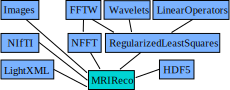

Overview
As outlined in the introduction MRIReco.jl MRIReco has the philosophy to to reuse functionality provided by other Julia package and basically add the MRI specific functionality. This approach is enabled by the Julia package manager that can handle all dependencies automatically. Packages are therefore considered to be cheap in Julia so that modularization can be done across packages. In the following graph, the most important (not all) dependencies of MRIReco are visualized.

Most importantly, all iterative solvers are implemented in RegularizedLeastSquares.jl so that MRIReco can benefit from all improvements made in that package. Gridding is implemented in the NFFT.jl package, which has many applications byond MRI. Sparsifying transformations are usually also not MRI specific and therefore implemented in independent packages (e.g. Wavelets.jl). For storing image data MRIReco.jl uses NiFTI.jl. Dicom data can potentially be saved by the DICOM.jl package, which, however, is not a hard dependency of MRIReco.
Data Types and Flow
An overview about the most important data types and the data flow during recosntruction is given in the following figure.

Raw data is usually obtained from files (discussed in File Handling). Since the data layout of the RawAcquisitionData object is not perfectly suited for reconstruction, we